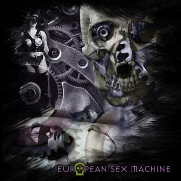

|
 
- - - - - - - - - -
Rescuing a forgotten musical masterpiece
From the creative minds of Axel and Miles Dietrich, the mysterious and obscure band's one and only album is rediscovered and saved for posterity.
- - - - - - - - - -
By Sterling Landeros
"European Sex Machine - it is the musik of the future, and it always will be.
Many of fans can say, Axel and Miles Deitrich have crafted a superminimalistic sound that gives the listener the time to cherish the musik. Sometimes even one note is too many. Our sound is patent pending in America.
We have lived in all parts of Europe and can simultaneously represent all and none of the continent. We were attracted to the Texas by achievements of The Black Man in music, and went there to absorb and enrich the energie of this musiks. There is no thing like this combination of elements, like the powerful and slow Bomb!!!"
 O READS THE ONLY KNOWN PRESS STATEMENT on record regarding Axel and Miles Deitrich and the mysterious band known as the European Sex Machine. I had been totally unaware of the group and their music until I received a package from the brother of an old friend who had died recently. The enclosed note simply read, "She wanted you to have this." It was a copy of ESM on cassette tape. My initial thought was that this was a rather a cheesy token of remembrance, considering it would be one of her last acts in life, but from the moment I slipped it into my car's player I became obsessed with finding our more about the artist or artists behind the music. O READS THE ONLY KNOWN PRESS STATEMENT on record regarding Axel and Miles Deitrich and the mysterious band known as the European Sex Machine. I had been totally unaware of the group and their music until I received a package from the brother of an old friend who had died recently. The enclosed note simply read, "She wanted you to have this." It was a copy of ESM on cassette tape. My initial thought was that this was a rather a cheesy token of remembrance, considering it would be one of her last acts in life, but from the moment I slipped it into my car's player I became obsessed with finding our more about the artist or artists behind the music.
My dead friend could shed no light on the matter and as I came to find soon enough, neither could anybody else. I spent the following summer tracking dead leads in Europe and eventually discovered the passage above from an old underground fan magazine and I immediately set out on the Texas trail. Some weeks and many phone calls and emails later, I finally was able to make contact and arrange a sit down meeting at a small foo-foo espresso bar in Austin Texas to talk to the enigmatic duo behind the myth and the music.
I must first describe their appearance, for it was quite striking. To start, they were indistinguishable from one another. I'd never actually talked to twins before and it was like having a conversation in stereo or like having a portal open to an alternate, doppelganger world. Their skin color was exceedingly fair to the point of being nearly pure white, but a healthy shade of white. This was accentuated by their shocks of white hair. They never removed their Alain Mikli shades during our meeting, but had they done so, I fully expected that I would be gazing into a double pair of shocking pink pupils below hairless brows. Looking very much like two Andy Warhol clones, their attire for the day (and for every day I suspect) was tight fitting black long sleeved knit shirts which seemed entirely inappropriate for Austin and surely impractical for the summer heat. The black jeans were perhaps at least a tip to the local environs. Yet while I felt coated in a persistent layer of perspiration, they remained very dry and cool like two vodka martinis, as though they did not really exist in the mundane and inconvenient level of reality that I was occupying.
Let me start by thanking you for meeting with me today. My first and obvious question - are you identical twins?
(Their replies are spoken with a light German accent with just a twinge of Texas twang.)
To which of us are you speaking?
I don't know. Both or either.
Please continue.
 Next page | "Love is everything. If you put sex and death together, Love is what you get. That much is obvious" Next page | "Love is everything. If you put sex and death together, Love is what you get. That much is obvious"
1, 2
|